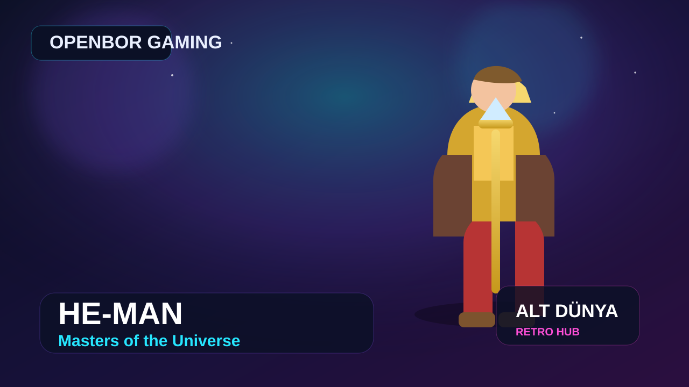

He-Man: Masters of the Universe
He-Man: Masters of the Universe, OpenBOR motoru ile hazırlanmış fan yapımı bir beat'em up projesi. Eternia atmosferini klasik arcade dövüş yapısıyla buluşturan bu yapım, He-Man evrenini retro aksiyon mantığıyla yeniden yorumlayan keyifli bir nostalji deneyimi sunuyor.

Oyun Künyesi
AltDünya Yorumu
He-Man gibi güçlü bir nostalji markasının OpenBOR formatına taşınması bu oyunu ilginç kılıyor. Resmi tarafta çok sık göremediğimiz bu yaklaşım, hem retro beat'em up sevenler için hem de Masters of the Universe atmosferini aksiyon içinde görmek isteyenler için güzel bir arşivlik örnek.
Kurulum Rehberi Videosu
Oyun Özeti
Bu proje, He-Man ve Masters of the Universe evrenini klasik arcade beat'em up kalıbına yerleştiriyor. Yani yapı olarak Final Fight, Streets of Rage ya da benzeri eski usul yandan ilerlemeli dövüş oyunlarının ritmini hedefliyor; tema tarafında ise Eternia, kahramanlar, düşmanlar ve çizgi film tonunu öne çıkarıyor. Sonuçta ortaya resmi bir ticari oyundan çok, güçlü bir hayran işi yorum çıkıyor.
Oyunun Neden İlgi Çekici Olduğu
- He-Man evrenini doğrudan arcade beat'em up yapısına taşıdığı için çok doğal bir nostalji hissi veriyor.
- OpenBOR sahnesinin en eğlenceli taraflarından biri olan “tanıdık evren + klasik oynanış” formülünü iyi temsil ediyor.
- Fan yapımı olduğu için resmi oyunlarda göremeyeceğimiz daha serbest bir yorum sunuyor.
- Video içeriğinde hem nostalji hem de “böyle bir oyun da mı varmış?” hissi yaratma potansiyeli yüksek.
Kısa Fact Köşesi
- Bu yapım resmi lisanslı bir ticari He-Man oyunu değil, topluluk tarafından hazırlanmış bir OpenBOR projesidir.
- OpenBOR motoru, özellikle fan yapımı beat'em up oyunları ve karakter crossover projeleriyle bilinir.
- Bu tarz yapımların en büyük gücü, çocukluk evrenlerini eski usul arcade oynanışla birleştirmeleridir.
- He-Man teması, güçlü karakter tasarımı ve düz aksiyon yapısı sayesinde beat'em up türüne çok uygun durur.
Kurulum / Çalıştırma Notu
Paketi indirdikten sonra klasörü dışarı çıkarın. Arşiv içinde ayrı çalıştırıcı dosya varsa doğrudan onu açın. OpenBOR tabanlı sürümlerde çoğu zaman ekstra kurulum gerekmez. Açılışta sorun yaşarsanız klasörü masaüstüne taşıyıp tekrar deneyebilir, gerektiğinde yönetici olarak çalıştırabilirsiniz.